武将多场景美术
站立、办事、指挥三张母图服务全部界面；头像与半身由界面裁剪，共享场景背景。旧图按真实来源复用。点击查看完整原图。
曹操 cao
站立母图793×1983 · 透明 · 复用已审阅原图办事母图1086×1448 · 复用已审阅原图指挥母图1672×941 · 复用已审阅原图 刘备 person-636
站立母图793×1983 · 透明 · 复用已审阅原图办事母图1086×1448 · 复用已审阅原图指挥母图1672×941 · 复用已审阅原图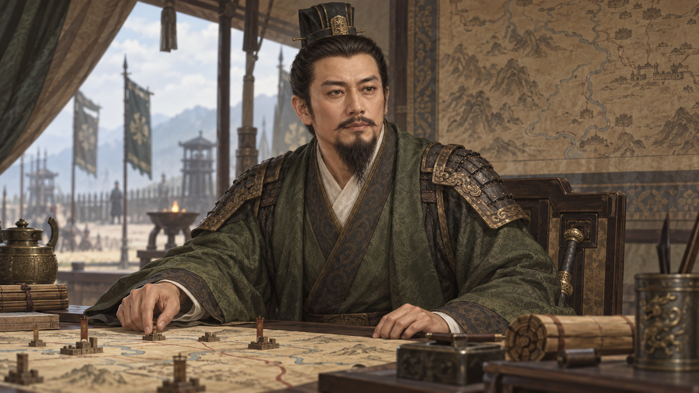
孙权 person-368
站立母图793×1983 · 透明 · 复用已审阅原图办事母图1086×1448 · 复用已审阅原图指挥母图1672×941 · 复用已审阅原图 周瑜 person-246
站立母图793×1983 · 透明 · 复用已审阅原图办事母图1086×1448 · 复用已审阅原图指挥母图1672×941 · 复用已审阅原图 阿会喃 person-1
站立母图793×1983 · 透明 · 复用已审阅原图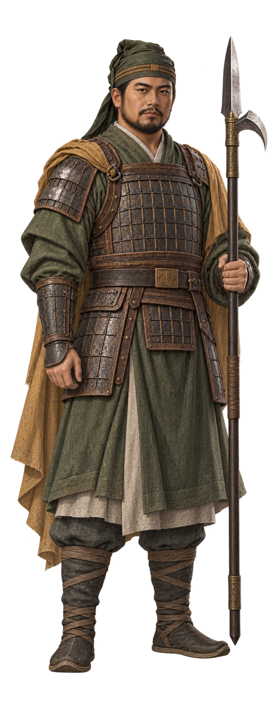
办事母图1086×1448 · 复用已审阅原图指挥母图1672×941 · 复用已审阅原图 韦昭 person-2
站立母图793×1983 · 透明 · 复用已审阅原图办事母图1086×1448 · 复用已审阅原图指挥母图1672×941 · 复用已审阅原图 伊籍 person-3
站立母图793×1983 · 透明 · 复用已审阅原图办事母图1086×1448 · 复用已审阅原图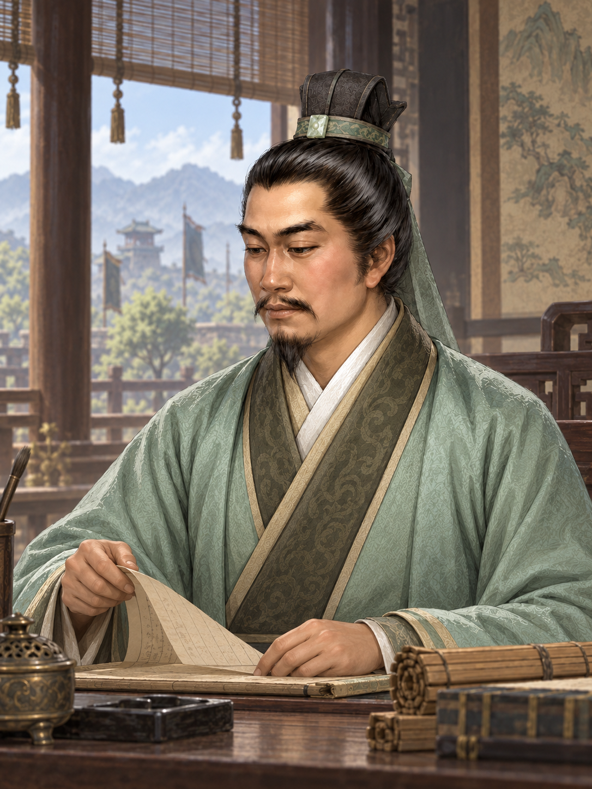
指挥母图1672×941 · 复用已审阅原图 尹大目 person-5
站立母图793×1983 · 透明 · 复用已审阅原图办事母图1086×1448 · 复用已审阅原图指挥母图1672×941 · 复用已审阅原图 尹默 person-6
站立母图793×1983 · 透明 · 复用已审阅原图办事母图1086×1448 · 复用已审阅原图指挥母图1672×941 · 复用已审阅原图 卫瓘 person-9
站立母图793×1983 · 透明 · 复用已审阅原图办事母图1086×1448 · 复用已审阅原图指挥母图1672×941 · 复用已审阅原图 袁胤 person-11
站立母图793×1983 · 透明 · 复用已审阅原图办事母图1086×1448 · 复用已审阅原图指挥母图1672×941 · 复用已审阅原图 袁涣 person-13
站立母图793×1983 · 透明 · 复用已审阅原图办事母图1086×1448 · 复用已审阅原图指挥母图1672×941 · 复用已审阅原图 阎行 person-15
站立母图793×1983 · 透明 · 复用已审阅原图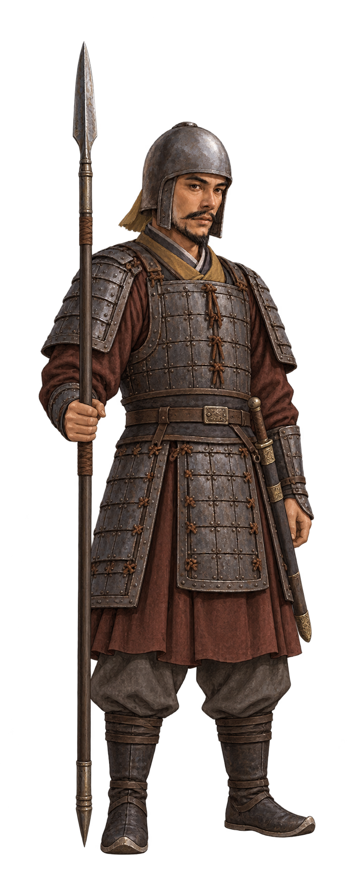
办事母图1086×1448 · 复用已审阅原图指挥母图1672×941 · 复用已审阅原图 阎柔 person-16
站立母图793×1983 · 透明 · 复用已审阅原图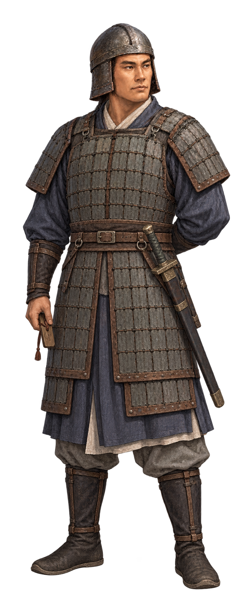
办事母图1086×1448 · 复用已审阅原图指挥母图1672×941 · 复用已审阅原图 袁术 person-17
站立母图793×1983 · 透明 · 复用已审阅原图办事母图1086×1448 · 复用已审阅原图指挥母图1672×941 · 复用已审阅原图 袁尚 person-18
站立母图793×1983 · 透明 · 复用已审阅原图办事母图1086×1448 · 复用已审阅原图指挥母图1672×941 · 复用已审阅原图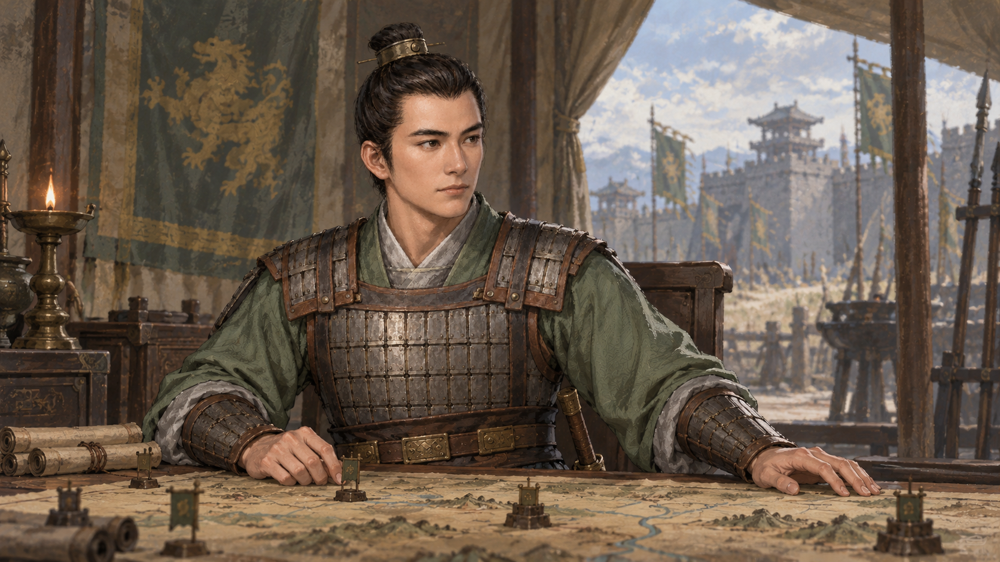
阎象 person-20
站立母图793×1983 · 透明 · 复用已审阅原图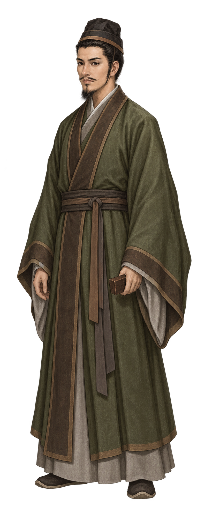
办事母图1086×1448 · 复用已审阅原图指挥母图1672×941 · 复用已审阅原图 袁谭 person-21
站立母图793×1983 · 透明 · 复用已审阅原图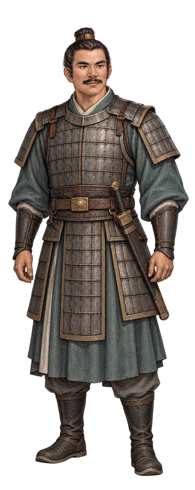
办事母图1086×1448 · 复用已审阅原图指挥母图1672×941 · 复用已审阅原图 阎圃 person-22
站立母图793×1983 · 透明 · 复用已审阅原图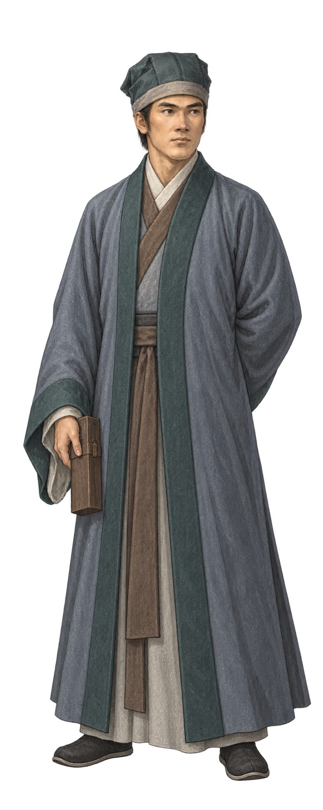
办事母图1086×1448 · 复用已审阅原图指挥母图1672×941 · 复用已审阅原图 袁燿 person-23
站立母图793×1983 · 透明 · 复用已审阅原图办事母图1086×1448 · 复用已审阅原图指挥母图1672×941 · 复用已审阅原图 王威 person-24
站立母图793×1983 · 透明 · 复用已审阅原图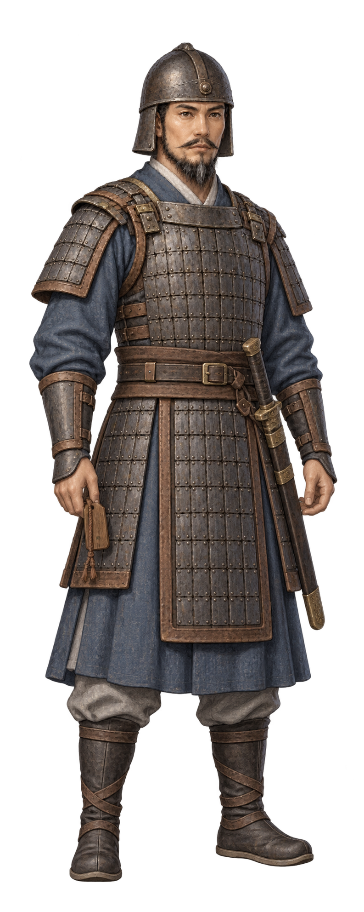
办事母图1086×1448 · 复用已审阅原图指挥母图1672×941 · 复用已审阅原图 王异 person-25
站立母图793×1983 · 透明 · 复用已审阅原图办事母图1086×1448 · 复用已审阅原图指挥母图1672×941 · 复用已审阅原图 王允 person-26
站立母图793×1983 · 透明 · 复用已审阅原图办事母图1086×1448 · 复用已审阅原图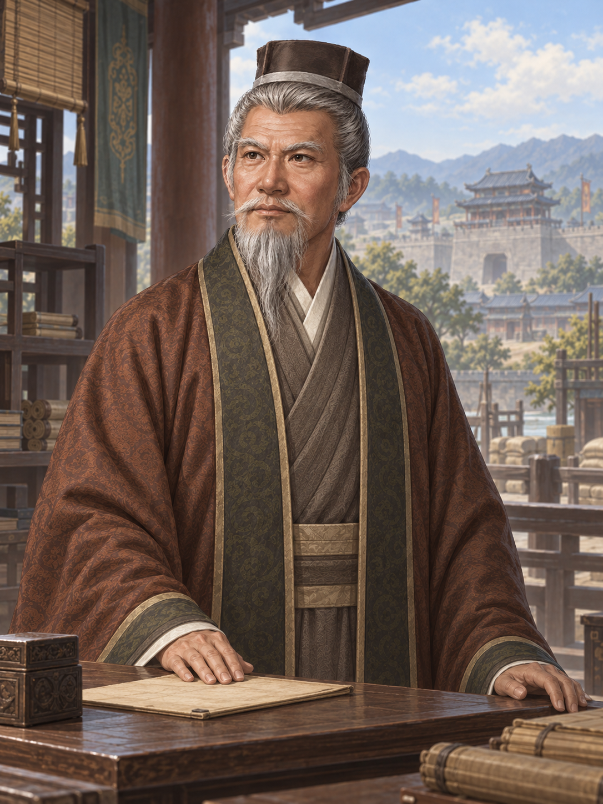
指挥母图1672×941 · 复用已审阅原图 王基 person-27
站立母图793×1983 · 透明 · 复用已审阅原图办事母图1086×1448 · 复用已审阅原图指挥母图1672×941 · 复用已审阅原图 王匡 person-29
站立母图793×1983 · 透明 · 复用已审阅原图办事母图1086×1448 · 复用已审阅原图指挥母图1672×940 · 复用已审阅原图 王业 person-30
站立母图793×1983 · 透明 · 复用已审阅原图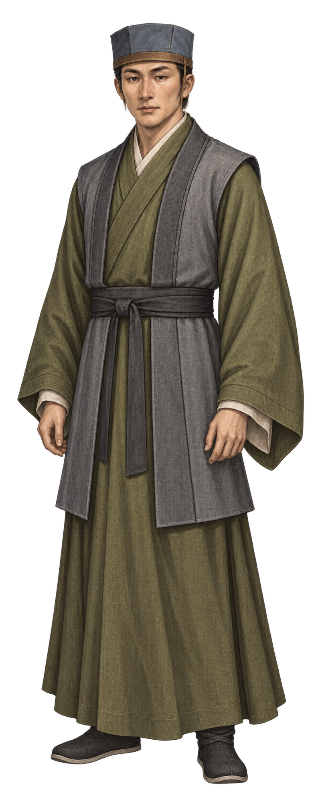
办事母图1086×1448 · 复用已审阅原图指挥母图1672×941 · 复用已审阅原图 王经 person-31
站立母图793×1983 · 透明 · 复用已审阅原图办事母图1086×1448 · 复用已审阅原图指挥母图1672×941 · 复用已审阅原图 王浑 person-33
站立母图793×1983 · 透明 · 复用已审阅原图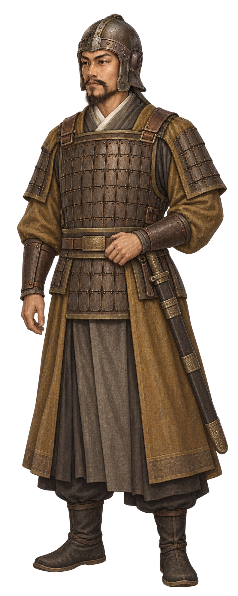
办事母图1086×1448 · 复用已审阅原图指挥母图1672×941 · 复用已审阅原图 王粲 person-34
站立母图793×1983 · 透明 · 复用已审阅原图办事母图1086×1448 · 复用已审阅原图指挥母图1672×941 · 复用已审阅原图 王修 person-35
站立母图793×1983 · 透明 · 复用已审阅原图办事母图1086×1448 · 复用已审阅原图指挥母图1672×941 · 复用已审阅原图 王戎 person-36
站立母图793×1983 · 透明 · 复用已审阅原图办事母图1086×1448 · 复用已审阅原图指挥母图1672×941 · 复用已审阅原图 王祥 person-39
站立母图971×1619 · 透明办事母图971×1619 · 透明指挥母图971×1619 · 透明 区星 person-40
站立母图971×1619 · 透明 办事母图971×1619 · 透明
办事母图971×1619 · 透明 指挥母图971×1619 · 透明
指挥母图971×1619 · 透明
王双 person-41
站立母图971×1619 · 透明 办事母图971×1619 · 透明
办事母图971×1619 · 透明 指挥母图971×1619 · 透明
指挥母图971×1619 · 透明
王忠 person-42
站立母图971×1619 · 透明 办事母图971×1619 · 透明
办事母图971×1619 · 透明 指挥母图971×1619 · 透明
指挥母图971×1619 · 透明